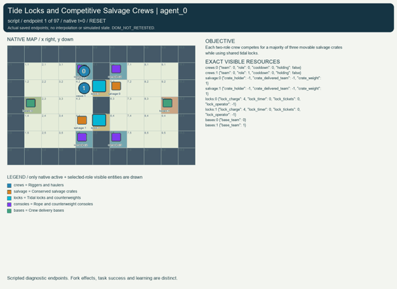
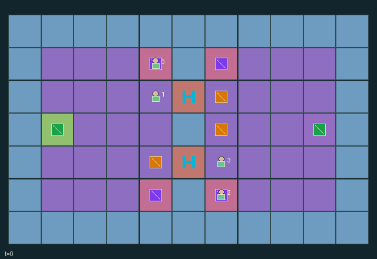

GI149 · Tide Locks and Competitive Salvage Crews

Original recording scope: 角色视角 · Mode: 固定脚本演示
Additional generated state replay (different trajectory / full-state debug)

Each two-role crew competes for a majority of three movable salvage crates while using shared tidal locks.
Identity and original contract
4 independently actionable roles; 10 discrete commands per role; 170 native observation columns per role; original horizon 96 steps. Declared per-step reward range: -13 to 13. Observation regime: partially_observable.
Source SHA-256: 9abcc5d6624660d59aecb39b200c169a66fc87c4e017edba89e97954d69bd011
The objective, rewards, population, map and horizon remain original. A preview is not a success claim.
Objective and gameplay
Each two-role crew competes for a majority of three movable salvage crates while using shared tidal locks.
Only riggers operate counterweights and only haulers lift crates. A loaded move entering or leaving a lock requires a simultaneous rigger of the same crew. Unladen opposing entrants can use and consume shared entry tickets, and rival riggers can contest the same console-controlled lock. Loaded motion imposes recovery time.
- Two crews each contain one rigger and one hauler. Only haulers carry, with capacity one weight-one crate.
- The tide cycles low, rising, high, falling, three transitions per phase. High tide prohibits lock entry and loaded lock motion.
- A rigger near a console can spend one counterweight charge to supply three opening intervals and two shared entry tickets.
- Cranking restores one counterweight charge, capped at four. Multiple crankers produce only one shared stroke.
- Loaded moves touching a lock need a same-crew rigger stabilizing during that very transition. A displayed operator is previous-transition history.
- An unladen opponent may consume an open lock's tickets. Concurrent holders use cyclic priority; contested movement destinations cancel.
- Each loaded move forces one recovery tick. Crates may be dropped and reclaimed before delivery; deposits are permanent.
- The first crew with two of three crates wins. Delivery margin pays five per crate; a terminal winner receives eight and the opposing crew loses eight.
Ending: A crew deposits at least two of the three crates, otherwise horizon ninety-six. At joint end the higher score wins; equal scores draw. Natural completion takes priority at the horizon.
What this game explores
Resource commons & externalities: An action changes a persistent resource or burden that another role also encounters. Compare extraction with maintenance and record the downstream resource trajectory.
Joint transport & shared access: Positions, load geometry, occupancy and persistent access constrain whose action can succeed next. Distinguish physical handoff, shared controls and simultaneous force from a cosmetic cooperation label.
Team opposition & interception: Cooperation within a team can coexist with opposition between teams. Preserve team membership, capture and possession rules, and report each team's outcomes instead of assuming a single shared return.
These are questions supported by rule structure, not observed learning effects.
Play it: operating walkthrough
crucibles play --game gi149Keep Python running and open its printed address. Select this game, set a seed and press Create session. The game itself is always English.
Assign a role range to Host with Assign / take over, or Assign all roles. Invite a second participant with Create player invitation, then assign a disjoint subset. Every original role is available.
For every owned role choose a legal command and press Queue. Arrow keys / WASD queue a declared directional action for the current role camera when available. Space or Advance one joint step advances everyone together. Non-directional games use the selectors.
Unqueued roles use the labelled untrained uniform-legal policy. Take over or release roles before the next step without resetting. Full-state debug is privileged and permanently logged; role cameras preserve permissions. Close the session to retain logs. Server restart does not restore sessions.
Complete command reference
IDs and English labels exactly match the manifest. Availability depends on role, resources, location and phase. An available action can still have no productive effect.
0·Wait
1·Move north
2·Move south
3·Move west
4·Move east
5·Stabilize a nearby lock from a console
6·Crank a nearby counterweight
7·Lift one nearby unclaimed crate
8·Drop carried crate
9·Deposit carried crate at own base
Roles and capability identifiers
These original role names describe capabilities, not interchangeable skins. Check each owned role's legal selector before planning handoffs.
agent_0·west_rigger
agent_1·west_hauler
agent_2·east_rigger
agent_3·east_hauler
Information and observation permissions
Terrain, tide, lock counterweights/timers/tickets/operators, bases and scores are public. Teammate state is shared. Enemy crew state is visible within Manhattan three, and crates are visible locally or while carried by the observer's crew. Geometry has no occlusion. Hidden payloads are minus one.
The GIF is full-state debug and may reveal hidden entities or private state. Train on obs[agent], not the picture, state tree or another role's private row. Field slices and visibility are in the original manifest.
Reinforcement-learning integration
import jax
from crucibles_jaxmarl import make
env = make("gi149")
key = jax.random.PRNGKey(0)
key, rk, ak, sk = jax.random.split(key, 4)
obs, state = jax.jit(env.reset)(rk)
actions = env.sample_actions(ak, state)
obs, state, rewards, dones, info = jax.jit(env.step_env)(sk, state, actions)
done = dones["__all__"]Observations are float32 vectors of width 170; actions are scalar int32; masks have 10 entries. Supply all 4 roles each transition. Masked sampling is an engineering reference, not a trained learner.
step_env retains terminal data without reset. step performs outer autoreset and keeps terminal data in info["raw_state"] and info["raw_observation"]. Use dones["__all__"] for episode boundaries; separate completion, failure and time limit in analysis.
JIT or vmap equal identities and shapes. Split independent reset, policy and transition keys. Group different shapes explicitly; do not shrink the population or horizon. Host rendering stays outside training.
Training questions and fair evaluation
Define valid completion from the objective before fitting. Preserve original rewards and also report real deliveries/services, losses, resource state, unresolved episodes and per-role returns. Animation is not a reward signal.
An action changes a persistent resource or burden that another role also encounters. Compare extraction with maintenance and record the downstream resource trajectory.
Positions, load geometry, occupancy and persistent access constrain whose action can succeed next. Distinguish physical handoff, shared controls and simultaneous force from a cosmetic cooperation label.
Cooperation within a team can coexist with opposition between teams. Preserve team membership, capture and possession rules, and report each team's outcomes instead of assuming a single shared return.
Compare memory, communication or centralized critics under matched actor information. Declare critic access; keep actor inputs role-filtered. Match partner/opponent distributions, masks, compute and checkpoint selection. Final tests never enter fitting or selection.
Independent training runs or source-pairing blocks are inferential units; episodes from one policy are not independent training replications. Save hashes, keys, versions, device, time and cost. Negative, zero, failed and indeterminate outcomes are valid. No trained checkpoint or target score is supplied.
Classification and evidence
Overlapping editorial labels are reading aids, not proof of novelty, difficulty, strategic equivalence or learning effects.
- Resource commons & externalities
- Evidence
manifest.task.objective: Each two-role crew competes for a majority of three movable salvage crates while using shared tidal locks.
- Joint transport & shared access
- Evidence
manifest.task.objective: Each two-role crew competes for a majority of three movable salvage crates while using shared tidal locks.
- Evidence
manifest.task.interaction: Only riggers operate counterweights and only haulers lift crates. A loaded move entering or leaving a lock requires a simultaneous rigger of the same crew. Unladen opposing entrants can use and consume shared entry tickets, and rival riggers can contest the same console-controlled lock. Loaded motion imposes recovery time.
- Evidence
manifest.task.observation_access: Terrain, tide, lock counterweights/timers/tickets/operators, bases and scores are public. Teammate state is shared. Enemy crew state is visible within Manhattan three, and crates are visible locally or while carried by the observer's crew. Geometry has no occlusion. Hidden payloads are minus one.
- Team opposition & interception
- Evidence
manifest.task.interaction: Only riggers operate counterweights and only haulers lift crates. A loaded move entering or leaving a lock requires a simultaneous rigger of the same crew. Unladen opposing entrants can use and consume shared entry tickets, and rival riggers can contest the same console-controlled lock. Loaded motion imposes recovery time.
- Evidence
manifest.task.observation_access: Terrain, tide, lock counterweights/timers/tickets/operators, bases and scores are public. Teammate state is shared. Enemy crew state is visible within Manhattan three, and crates are visible locally or while carried by the observer's crew. Geometry has no occlusion. Hidden payloads are minus one.
- Evidence
scene.rules.5: An unladen opponent may consume an open lock's tickets. Concurrent holders use cyclic priority; contested movement destinations cancel.
Source, receipts and preview limits
The additional generated state GIF replays saved untrained legal actions through the original kernel. At most 25 actual endpoints include initial and terminal state; no invented interpolation. It is full-state debug, not the role observation. Where an original scene preview exists, it is displayed first with its own recorded information scope. The two recordings may use different trajectories and views.
Original source, observation slices, manifest and mechanism
Native receipt · Presentation receipt
Engineering passes do not establish learning. Nonzero floating differences remain recorded and undetermined; no new tolerance was introduced. Human scores remain unverified.